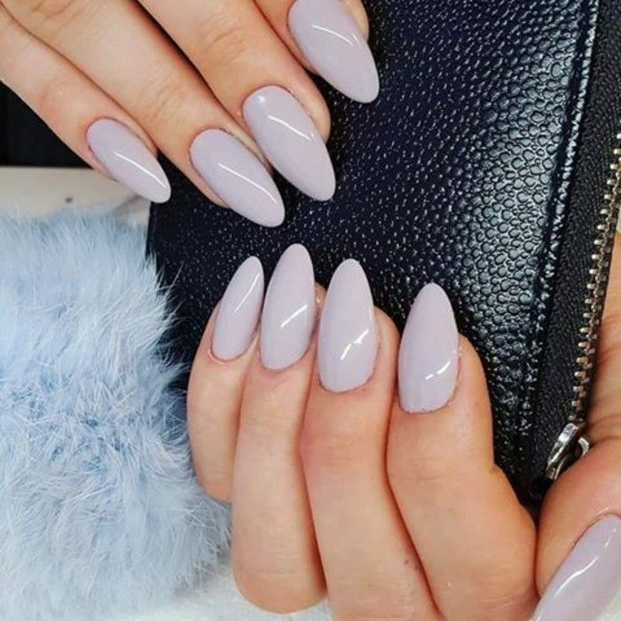

Gel Color
Se trata de una alternativa a la manicura tradicional, hechas a base de un gel flexible que se adhiere a la uña con ayuda de un pegamento especial, tienden a durar alrededor de tres semanas, tiempo durante el cual permaneceran absolutamene perfectas
Precio: MNX $100
